Família Molon
Principal
Sobre a família
Genealogia
Livro
Galeria de fotos
Notícias
Encontros
Galeria de fotos
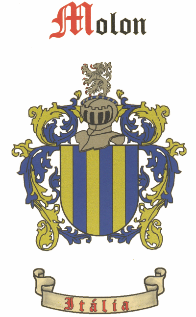
Brasão da Família
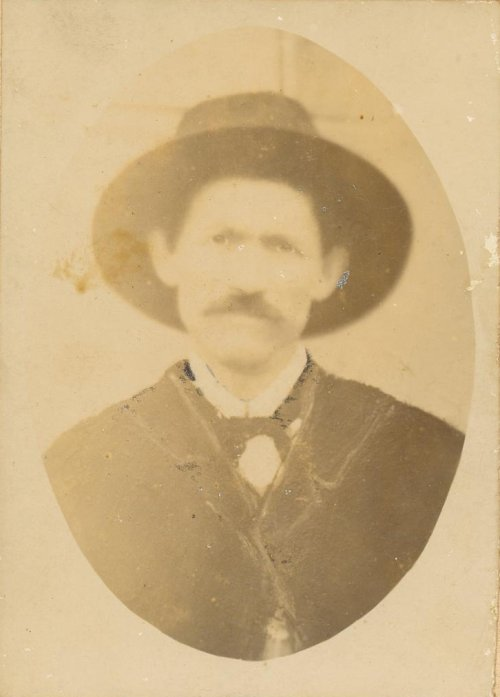
Angelo Molon - Otávio Rocha - Flores da Cunha
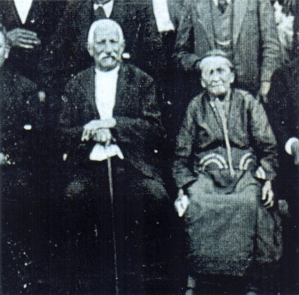
Giovanni Batista Molon e Maria Magnabosco - Farroupilha
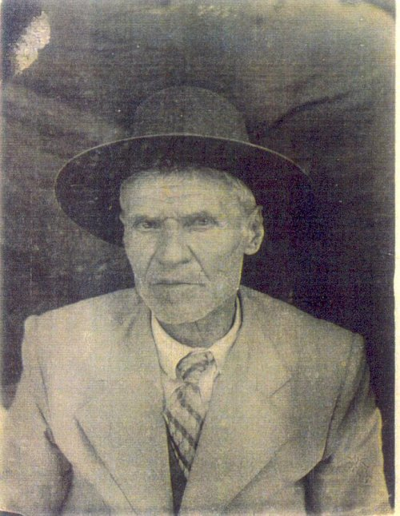
Girolamo Molon - Farroupilha
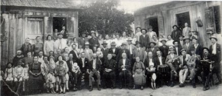
Bodas de Ouro de Giovanni Batista Molon e Maria Magnabosco
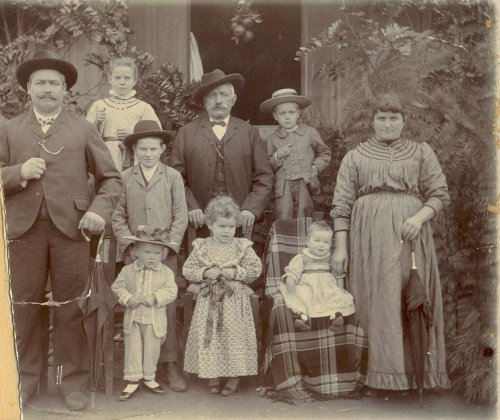
Pietro Molon
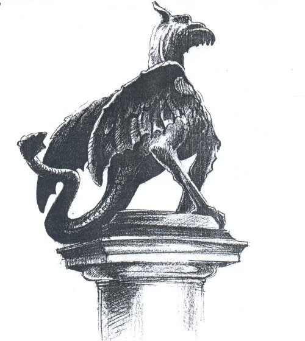
IL GRIFFO - Símbolo de Arzignano
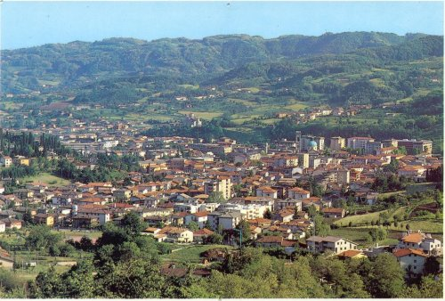
Arzignano - Itália - Cartão Postal
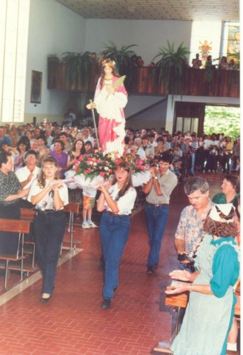
Santa Eurósia - Otávio Rocha - RS
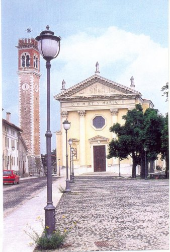
Igreja Nossa Senhora da Anunciação - Arzignano - Itália
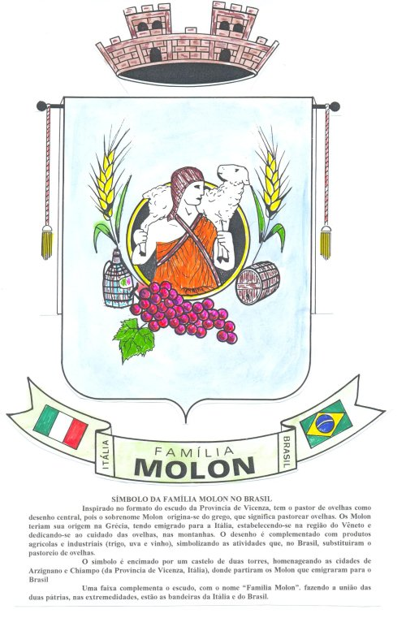
Símbolo da Família
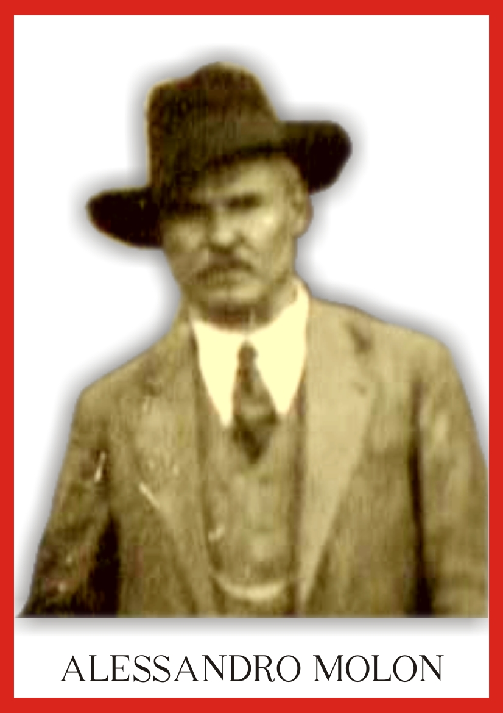
Alessandro Molon
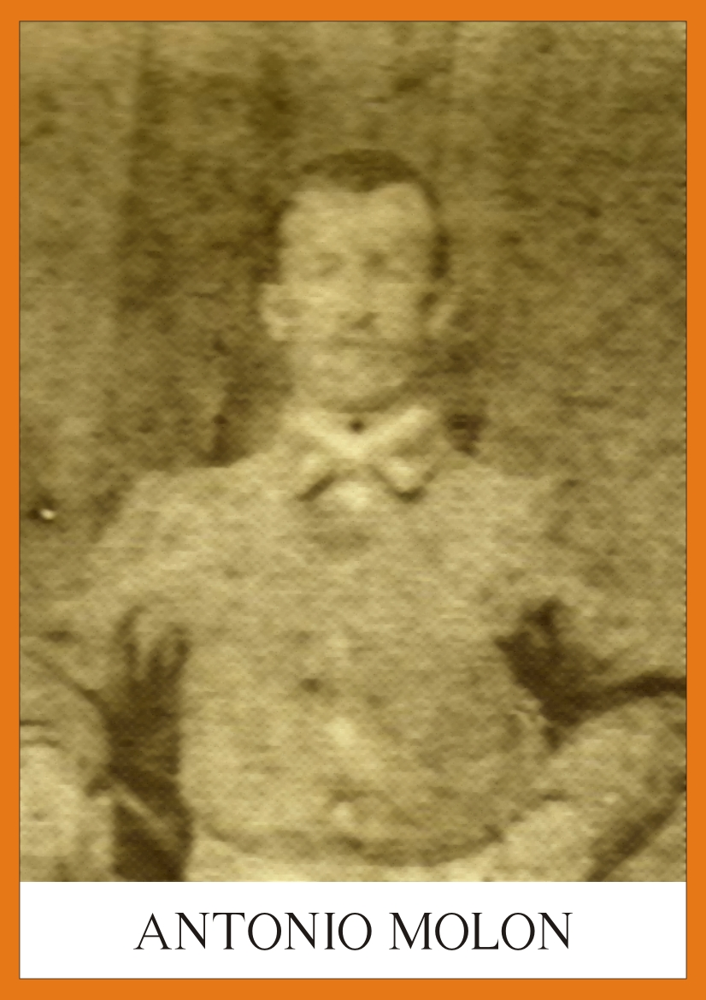
Antonio Molon
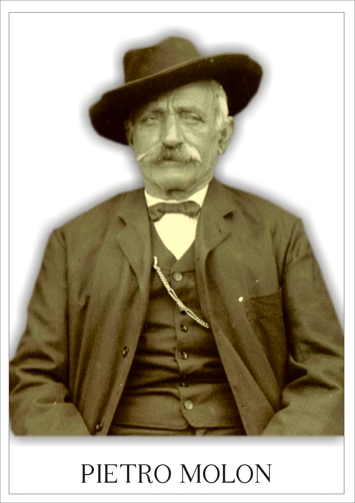
Pietro Molon
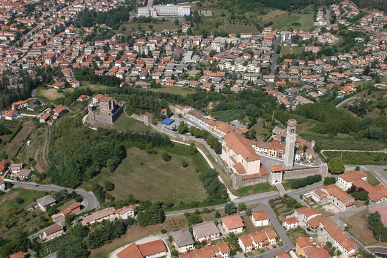
Foto aérea do Castello de Arzignano
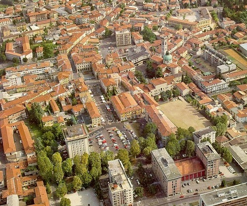
Centro de Arzignano - sotoportego
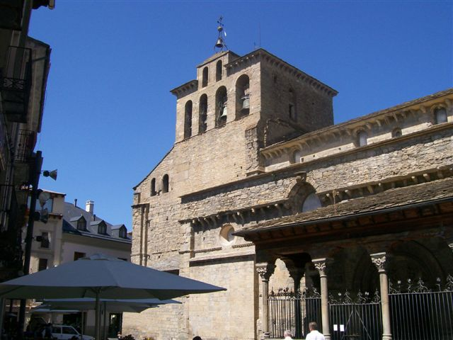
Catedral São Pedro - Jaca
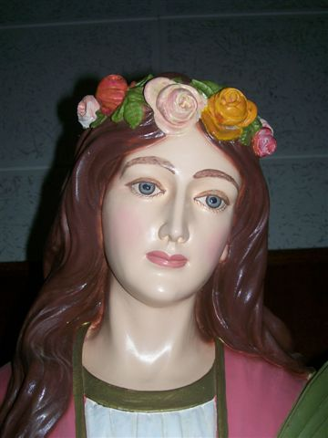
Estátua Santa Eurósia - Otávio Rocha
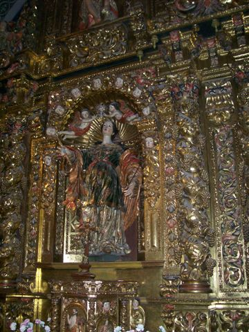
Altar de Santa Eurósia em Jaca/Espanha
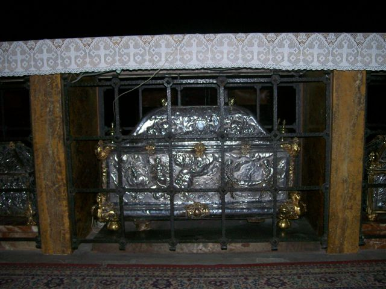
Urna com as relíquias de Santa Eurósia em Jaca/Espanha
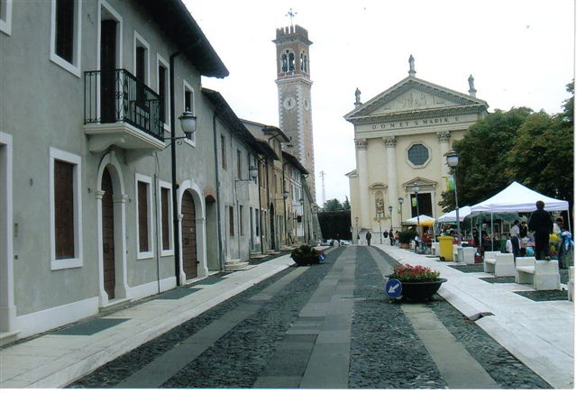
Igreja de Castello de Arzignano
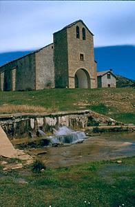
Santuário de Santa Eurósia - Espanha
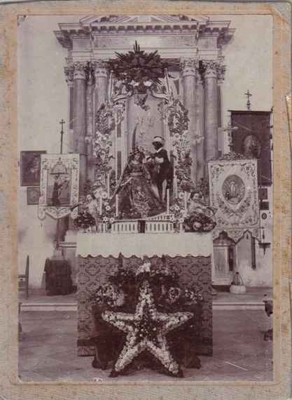
Santa Eurósia - foto de 127 anos
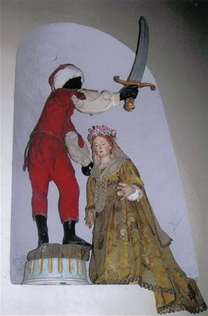
Estátuas de S. Eurósia e o seu algoz
{kind=link}
{kind=link}
{kind=link}
{kind=link}
{kind=link}
{kind=link}
{kind=link}
{kind=link}
{kind=link}
{kind=link}
{kind=link}
{kind=link}
{kind=link}
{kind=link}
{kind=link}
{kind=link}
{kind=link}
{kind=link}
{kind=link}
{kind=link}
{kind=link}
{kind=link}
{kind=link}
{kind=link}